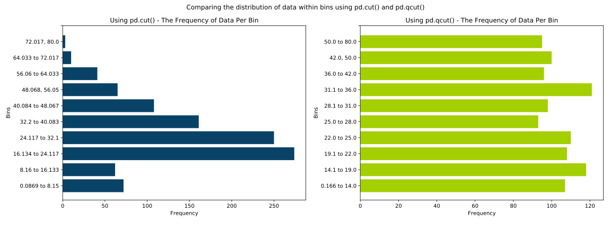
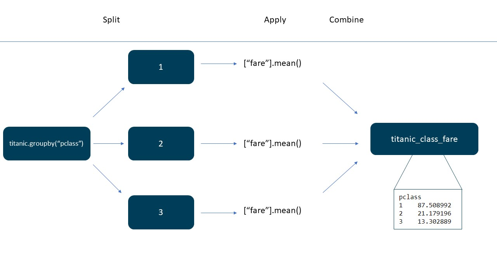

Chapter 6 - Summary Statistics and Aggregation

This is a HTML document. The Introduction to Python course is written and intended to be used in a Jupyter Notebook file. These HTML documents have been made available for users who require screen readers or other accessibility needs. These HTML documents have been tested, but if you notice any errors or any compatibility issues please contact us on the GSS Capability email inbox.
If you are using a screen reader you will need to set your punctuation level (sometimes called verbosity) to full, especially for the code sections.
Chapter Overview and Learning Objectives:
Packages
Data
min
max
quantiles
Mean
Median
Mode
Standard Deviation
Variance
Counts
Null Value counts
Value Counts
1 Packages and Datasets
1.1 Packages
As a reminder, we should always import our packages at the top of our script. In this session we will use the following:
- pandas, and give it the nickname pd
- numpy and give it the nickname np
1.2 Exercise
Import Pandas and give it the nickname pd Import Numpy and give it the nickname np
import pandas as pd
import numpy as np1.3 Datasets
Good practice also dictates that we read in our datasets at the top of our script too.
In this session we’ll be using
| variable name | file name | |
|---|---|---|
| animals | animals.csv | |
| titanic | titanic.xlsx |
1.4 Exercise
Load in these datasets listed above
You can check your variables are loaded by using %whos in Jupyter. In Spyder or other IDE’s they should appear in your variable explorer.
animals = pd.read_csv("../data/animals.csv")
titanic = pd.read_excel("../data/titanic.xlsx")If you struggle with this section, feel free to review the content of Chapter 3 that covered this in depth. Practicing these commands that we repeat over and over is a great way to retain the good practice guidelines.
2 Overall Descriptive Statistics
Pandas has an inbuilt method to get basic descriptive statistics across our dataset, this is the .describe() method.
2.1 Using the describe method
2.1.1 Example
titanic.describe()| pclass | survived | age | sibsp | parch | fare | body | |
|---|---|---|---|---|---|---|---|
| count | 1309.000000 | 1309.0000000 | 1046.00000 | 1309.0000000 | 1309.0000000 | 1308.00000 | 121.00000 |
| mean | 2.294882 | 0.3819710 | 29.88113 | 0.4988541 | 0.3850267 | 33.29548 | 160.80992 |
| std | 0.837836 | 0.4860552 | 14.41350 | 1.0416584 | 0.8655603 | 51.75867 | 97.69692 |
| min | 1.000000 | 0.0000000 | 0.16670 | 0.0000000 | 0.0000000 | 0.00000 | 1.00000 |
| 25% | 2.000000 | 0.0000000 | 21.00000 | 0.0000000 | 0.0000000 | 7.89580 | 72.00000 |
| 50% | 3.000000 | 0.0000000 | 28.00000 | 0.0000000 | 0.0000000 | 14.45420 | 155.00000 |
| 75% | 3.000000 | 1.0000000 | 39.00000 | 1.0000000 | 0.0000000 | 31.27500 | 256.00000 |
| max | 3.000000 | 1.0000000 | 80.00000 | 8.0000000 | 9.0000000 | 512.32920 | 328.00000 |
We can also get summary statistics on a specific column.
titanic["fare"].describe()count 1308.000000
mean 33.295479
std 51.758668
min 0.000000
25% 7.895800
50% 14.454200
75% 31.275000
max 512.329200
Name: fare, dtype: float64These statistics are explained in more detail below:
| Summary Statistic | Description |
|---|---|
| count | the number (count) of non missing entries in the given column. |
| mean | the average (arithmetic mean) data value in the given column. |
| std | the standard deviation (spread) of values in the given column. |
| min | the smallest value in the given column. |
| 25% | the value of the data at the lower quartile (i.e. after the first 25% of data, ordered from smallest to largest). |
| 50% | the middle value of the data (aka the median). half the values are larger than this value, and half smaller. |
| 75% | the value of the data at the upper quartile (i.e. after the first 75% of data, ordered from smallest to largest). |
| max | the maximum data value recorded. |
2.1.2 Example 2
Describe works across all numeric columns by default. We can display descriptive information for other data types by using the parameter include=
This parameter takes a list as the input; even if we’re just including one kind of data. Here we’re specifying that we want to include “object”, our text/string columns.
titanic.describe(include=["object"])| name | sex | ticket | cabin | embarked | home.dest | boat | |
|---|---|---|---|---|---|---|---|
| count | 1309 | 1309 | 1309 | 295 | 1307 | 745 | 486 |
| unique | 1307 | 2 | 929 | 186 | 3 | 369 | 28 |
| top | Connolly, Miss. Kate | male | CA. 2343 | C23 C25 C27 | S | New York, NY | 13 |
| freq | 2 | 843 | 11 | 6 | 914 | 64 | 39 |
| Summary Statistic | Description |
|---|---|
| count | The number (count) of non missing entries in the given column. |
| unique | The number of unique variables in a column. |
| top | The most frequently occurring value. |
| freq | The frequency of the “top” value (how often it appears). |
If there are two or more “top” values; e.g. both most frequently occurring values that have the same frequency within the table, Python will kind of arbitrarily choose one of them to be the top value. The link is added for general interest, you don’t need to understand it.
In this data there are two women and two men who share the same name. Pandas will choose one of them to display.
3 Range
We can also access these summary statistics individually. In most cases the name of the method is the same as the summary statistic.
3.1 min
We can use .min() to return the minimum value in a column.
3.1.1 Example
titanic["fare"].min()0.0This also works for object (text) columns.
titanic["name"].min()'Abbing, Mr. Anthony'3.2 max
We can use .max() to return the maximum value in a column.
3.2.1 Example
titanic["fare"].max()512.3292This also works for object (text) columns.
titanic["name"].max()'van Melkebeke, Mr. Philemon'Something important to note here is that pandas effectively assigns a value to each letter. This goes A-Z and then a-z. So a lower case “a” is treated as coming after a capital “Z” in Python.
This is why van Melkebeke, Mr. Philemon is the maximum value in our Titanic Dataframe rather than Zimmerman, Mr Leo. We can handle this issue by ensuring our data is either all lower case or all upper case before finding the .min() or .max() values.
3.2.2 Example
Here I have handled the issue by chaining the methods .str.lower() and .max() together. If I wanted to do more work with this column in future I may consider overwriting it with a lower case version (which would form part of the cleaning routine).
titanic["name"].str.lower().max()'zimmerman, mr. leo'The chaining of methods here applies left to right just as it is read, the column is selected, then the .lower() method is used from str methods, and then the .max() method is applied to the lower case column.
3.3 Quantiles
We can use .quantile() to find information at different points of our data.
3.3.1 Example
Our parameter is q= and then a decimal number. If we don’t specify this the default behaviour is 0.5, which returns the median (as it is the 50% quantile).
titanic["fare"].quantile(q=0.25)7.8958If we wish to specify more than one, we pass a list to the parameter q=
titanic["fare"].quantile(q=[0, 0.25, 0.5, 0.75, 1])0.00 0.0000
0.25 7.8958
0.50 14.4542
0.75 31.2750
1.00 512.3292
Name: fare, dtype: float64This is a great time to mention that you don’t necessary need to type a full list of numbers this way, plus the numbers we may want to use could belong to an enormous list, which is unreasonable to type by hand. This is where the range functions come in.
There are two of these functions:
range(start=, stop=, step=) where the start parameter specifies where to start, stop specifies where to stop (which is exclusive! Not included) and step is how we should jump from number to number, this must be an integer.
np.arange(start=, stop=, step=) comes from the numpy package (np) and creates a range from the start to the stop values (where the stop is exclusive). However, this function allows us to step in increments of any size, including floats (or decimal numbers).
Let’s see two quick examples before using this with the quantile() function.
3.3.2 Example
# Creating a range object
x = range(0, 10, 2) # Jump from 0-10 in increments of 2
# Using np.arange() to obtain an array of values
y = np.arange(0, 10, 0.5) # Jump from 0-10 in increments of 0.5
print(x, y)range(0, 10, 2) [0. 0.5 1. 1.5 2. 2.5 3. 3.5 4. 4.5 5. 5.5 6. 6.5 7. 7.5 8. 8.5
9. 9.5]You see here that the range() function gives a range object, rather than a list like structure of the values themselves, this restricts its use even further as it is less readable. It is recommended that np.arange() is used in most circumstances. Whilst the second output looks like a list, it is actually an array, a numpy specific object that is beyond the scope of this course.
For more information consult this link from Numpy. In the future, there will be some Reference Material added to this course that introduces this data type, as it is a great piece of material to come back to when moving onto more complex causes like Introduction to Machine Learning. This will never be listed as Core material, so don’t concern yourself too much with it.
3.4 Example 2
Let’s see how this function helps when finding quantiles.
# Note that .arange() comes from the numpy package (np)
titanic["fare"].quantile(q=np.arange(start=0.0,
stop=1.1, # Remember this is exclusive!
step=0.1)) 0.0 0.00000
0.1 7.56750
0.2 7.85420
0.3 8.05000
0.4 10.50000
0.5 14.45420
0.6 21.67920
0.7 26.95500
0.8 41.57920
0.9 78.05082
1.0 512.32920
Name: fare, dtype: float643.5 Exercise
- How old are the youngest and oldest passengers in the titanic DataFrame?
- Print out the 20th, 40th, 60th and 80th percentiles of the fare column in the titanic DataFrame.
# (a)
max_age = titanic["age"].max()
min_age = titanic["age"].min()
print("The oldest person on the titanic was", max_age, "and the youngest person was", str(min_age)+".")The oldest person on the titanic was 80.0 and the youngest person was 0.1667.# (b)
percentiles = titanic["fare"].quantile(q = np.arange(start = 0.2,
stop = 1,
step = 0.2))
percentiles0.2 7.8542
0.4 10.5000
0.6 21.6792
0.8 41.5792
Name: fare, dtype: float644 Averages
Now we will look at Measures of Central Tendency, often referred to as Averages.
4.1 Mean
Seen briefly in the previous chapter when discussing filling in missing values, the .mean() method (this is the arithmetic mean, which corresponds to summing all values and then dividing by the number of values there were) computes the arithmetic mean of a column.
4.1.1 Example
# Compute mean of the fare column
titanic["fare"].mean()33.295479281345574.2 Exercise
Confirm that the value given by .mean() for the fare column is the same as computing it manually.
Hint: You will need the .sum() function to compute the total of the column and the .count() function to compute the number of values (we will see this function in some more detail later). Remember that to compare if two objects are equal, we need to use ==.
mean_way_one = titanic["fare"].mean()
mean_way_two = titanic["fare"].sum()/titanic["fare"].count()
# Remember to compare two objects we use the == logical operator to return True or False
mean_way_one == mean_way_twoTrueAn interesting observation here is the using len() won’t work here and provide an answer that is slightly out, this is because len() counts all values (including nulls), whereas .count() only counts the non-null values (and is what is used by .mean() in the background).
4.3 Median
The .median() is the middle value (50th percentile) when the numbers are listed in order.
4.3.1 Example
titanic["fare"].median()14.45424.4 Mode
The .mode() is the value that occurs most frequently in the column.
4.4.1 Example 1
titanic["fare"].mode()0 8.05
Name: fare, dtype: float644.4.2 Example 2
We can also find the mode in object based columns. Here the name column has two modes, since both “Connolly, Miss. Kate” and “Kelly, Mr. James” appear twice in the Data Frame.
Generally, when these cases appear the following terminology is used:
- One mode - Unimodal
- Two modes - Bimodal
- Three modes - Trimodal
As such, the name column is bimodal in this example. If you’re wondering how we know the frequency (the number of times they each appear in the DataFrame), we will see a very useful method for this later in the chapter.
titanic["name"].mode()0 Connolly, Miss. Kate
1 Kelly, Mr. James
Name: name, dtype: objectInterestingly this data isn’t duplicates! There really were two separate individuals with those names!
titanic[(titanic["name"] == "Connolly, Miss. Kate") | (titanic["name"] == "Kelly, Mr. James")]| pclass | survived | name | sex | age | sibsp | parch | ticket | fare | cabin | embarked | home.dest | body | boat | |
|---|---|---|---|---|---|---|---|---|---|---|---|---|---|---|
| 725 | 3 | 1 | Connolly, Miss. Kate | female | 22.0 | 0 | 0 | 370373 | 7.7500 | NaN | Q | Ireland | NaN | 13 |
| 726 | 3 | 0 | Connolly, Miss. Kate | female | 30.0 | 0 | 0 | 330972 | 7.6292 | NaN | Q | Ireland | NaN | NaN |
| 924 | 3 | 0 | Kelly, Mr. James | male | 34.5 | 0 | 0 | 330911 | 7.8292 | NaN | Q | NaN | 70 | NaN |
| 925 | 3 | 0 | Kelly, Mr. James | male | 44.0 | 0 | 0 | 363592 | 8.0500 | NaN | S | NaN | NaN | NaN |
5 Spread
Another element of the data we often want to investigate is how spread out it is, we use Measures of Spread to do so.
5.1 Standard Deviation
The standard deviation measures the spread of the data about the mean value. It shows you how much your data distribution is spread out around the mean or average.
5.1.1 Example
We can calculate the standard deviation using the .std() method.
titanic["fare"].std()51.758668239174115.2 Variance
Variance measures how spread out the values of a variable are in general.
5.2.1 Example
We can calculate the variance using the .var() method.
titanic["fare"].var()2678.9597378928915.3 Exercise
(a)(i) Find the variance and standard deviation of the age column in the titanic dataset.
(a)(ii) Round these two values to 2 decimal places and output the values in a sentence.
- There is a link between these two metrics, namely that the Standard Deviation is the square root of the Variance. Confirm this relationship. Hint: To use square root, we need the np.sqrt() function from numpy (import numpy as np).
# (a)(i) & (a)(ii)
var_age = round(titanic["age"].var(), ndigits = 2)
std_age = round(titanic["age"].std(), ndigits = 2)
print("The variance of the ages of titanic passengers was", var_age, "and the standard deviation was", str(std_age) + ".")The variance of the ages of titanic passengers was 207.75 and the standard deviation was 14.41.# (b)
var_age = titanic["age"].var()
std_age = titanic["age"].std()
np.sqrt(var_age) == std_ageTrue6 Counting Values
6.1 Counts
As we saw in the earlier exercise, we can find the number of non null values in a column using the .count() method. By non null values we mean values with data in them, not the missing values.
As a reminder we can use either .shape or len() to find the number of rows, which for titanic is 1309 rows (this includes rows that have missing values).
6.1.1 Example
titanic["embarked"].count()1307As you can see embarked returns 1307 - so there’s 2 missing values.
6.2 Null Value counts
We can find how many null values we have by using the .isnull() method. This returns a Boolean series consisting of True and False values whether the value is null or not.
6.2.1 Example 1
titanic["age"].isnull().tail()1304 False
1305 True
1306 False
1307 False
1308 False
Name: age, dtype: boolAs these have numeric values behind them (True is 1, False is 0 ) we can use .sum() to total them and obtain the number of null values in a column.
titanic["age"].isnull().sum()263In more modern versions of Pandas the method .isna() also exists and provides the same output.
6.3 Exercise
Compute the proportion of null values (a decimal between 0 and 1, equivalent to a percentage, for example 0.85 means 85%) in the age column. Use the isna() function to compute the number of null values this time.
Hint: To compute this, we need to first compute the number of null values and divide by the number of values overall in the column including the nulls!.
# Proportion of null values
(titanic["age"].isna().sum())/len(titanic["age"])0.20091673032849502So we see that the age column has 20% missing values.
6.4 Value Counts
We can find the frequencies of each unique value in a column, by using .value_counts(). This is particularly useful when applied to object columns to observe what values appear the most and least frequently.
titanic["sex"].value_counts()male 843
female 466
Name: sex, dtype: int646.5 Exercise
How many passengers were in each class?
Look in the help for pd.Series.value_counts() to see how you can return the values as a proportion instead.
# (a)
titanic["pclass"].value_counts()3 709
1 323
2 277
Name: pclass, dtype: int64# (b)
# Use the parameter and argument normalize = True to return proportions
# Show the help documentation
help(pd.Series.value_counts)
# modify the previous codeHelp on function value_counts in module pandas.core.base:
value_counts(self, normalize: 'bool' = False, sort: 'bool' = True, ascending: 'bool' = False, bins=None, dropna: 'bool' = True)
Return a Series containing counts of unique values.
The resulting object will be in descending order so that the
first element is the most frequently-occurring element.
Excludes NA values by default.
Parameters
----------
normalize : bool, default False
If True then the object returned will contain the relative
frequencies of the unique values.
sort : bool, default True
Sort by frequencies.
ascending : bool, default False
Sort in ascending order.
bins : int, optional
Rather than count values, group them into half-open bins,
a convenience for ``pd.cut``, only works with numeric data.
dropna : bool, default True
Don't include counts of NaN.
Returns
-------
Series
See Also
--------
Series.count: Number of non-NA elements in a Series.
DataFrame.count: Number of non-NA elements in a DataFrame.
DataFrame.value_counts: Equivalent method on DataFrames.
Examples
--------
>>> index = pd.Index([3, 1, 2, 3, 4, np.nan])
>>> index.value_counts()
3.0 2
1.0 1
2.0 1
4.0 1
dtype: int64
With `normalize` set to `True`, returns the relative frequency by
dividing all values by the sum of values.
>>> s = pd.Series([3, 1, 2, 3, 4, np.nan])
>>> s.value_counts(normalize=True)
3.0 0.4
1.0 0.2
2.0 0.2
4.0 0.2
dtype: float64
**bins**
Bins can be useful for going from a continuous variable to a
categorical variable; instead of counting unique
apparitions of values, divide the index in the specified
number of half-open bins.
>>> s.value_counts(bins=3)
(0.996, 2.0] 2
(2.0, 3.0] 2
(3.0, 4.0] 1
dtype: int64
**dropna**
With `dropna` set to `False` we can also see NaN index values.
>>> s.value_counts(dropna=False)
3.0 2
1.0 1
2.0 1
4.0 1
NaN 1
dtype: int64titanic["pclass"].value_counts(normalize=True)3 0.541635
1 0.246753
2 0.211612
Name: pclass, dtype: float647 Other Summary Statistics
7.1 Sum
We can use .sum() to add up columns of numeric data, which we saw when counting the null values.
7.1.1 Example 1
titanic["fare"].sum()43550.4869The .sum() method comes from Pandas; there is also an inbuilt function sum(). However if we have null values in the column this will return us nan.
7.1.2 Example 2
sum(titanic["fare"])nan7.2 Unique
We can use .unique() to find values that are unique in a column. This is returned as an array.
7.2.1 Example
titanic["boat"].unique()array([2, '11', nan, '3', '10', 'D', '4', '9', '6', 'B', '8', 'A', '5',
'7', 'C', '14', '2', '5 9', '13', '1', '15', '5 7', '8 10', '12',
'16', '13 15 B', 'C D', '15 16', '13 15'], dtype=object)7.3 Nunique
.nunique() can be used to find the number of unique values in a column.
7.3.1 Example
titanic["boat"].nunique()288 Creating Size Bands
8.1 pd.cut()
We can use the method pd.cut() to cut or “bin” our data into groups or categories. This is commonly done when creating size bands; like age bands, to create a categorical column out of a numeric one.
The method pd.cut() takes a column of data and groups it into “bins” or categories. This column will have the data type of “category”. There’s some more information about the “category” data type in this link.
We often assign the output of pd.cut() to a new column. This is because we don’t want to overwrite and change the data type of the existing column.
8.1.1 Example
titanic["binned_ages"] = pd.cut(titanic["age"],
bins=10)
titanic.head()| pclass | survived | name | sex | age | sibsp | parch | ticket | fare | cabin | embarked | home.dest | body | boat | binned_ages |
|---|---|---|---|---|---|---|---|---|---|---|---|---|---|---|
| 1 | 1 | Allen, Miss. Elisabeth Walton | female | 29.0000 | 0 | 0 | 24160 | 211.3375 | B5 | S | St Louis, MO | NaN | 2 | (24.117, 32.1] |
| 1 | 1 | Allison, Master. Hudson Trevor | male | 0.9167 | 1 | 2 | 113781 | 151.5500 | C22 C26 | S | Montreal, PQ / Chesterville, ON | NaN | 11 | (0.0869, 8.15] |
| 1 | 0 | Allison, Miss. Helen Loraine | female | 2.0000 | 1 | 2 | 113781 | 151.5500 | C22 C26 | S | Montreal, PQ / Chesterville, ON | NaN | NaN | (0.0869, 8.15] |
| 1 | 0 | Allison, Mr. Hudson Joshua Creighton | male | 30.0000 | 1 | 2 | 113781 | 151.5500 | C22 C26 | S | Montreal, PQ / Chesterville, ON | 135 | NaN | (24.117, 32.1] |
| 1 | 0 | Allison, Mrs. Hudson J C (Bessie Waldo Daniels) | female | 25.0000 | 1 | 2 | 113781 | 151.5500 | C22 C26 | S | Montreal, PQ / Chesterville, ON | NaN | NaN | (24.117, 32.1] |
We set the parameter bins = to specify the number of categories that we want. By passing an integer to this, Pandas takes the smallest value and the largest value in the column and creates the number of categories defined.
We can look at our bins. Note the bracket denotes exclusion of that number and the square bracket denotes inclusion of that number.
8.1.2 Example 1
Now these are categories we can see there is a relationship between each category.
titanic["binned_ages"].unique()array(['(24.117, 32.1]', '(0.0869, 8.15]', '(40.083, 48.067]',
'(56.05, 64.033]', '(32.1, 40.083]', '(48.067, 56.05]',
'(64.033, 72.017]', '(16.133, 24.117]', '(72.017, 80.0]', 'nan',
'(8.15, 16.133]'], dtype=object)We can also pass our own values to determine where the edges of the categories are, rather than allowing Python to compute these approximate ones. This could be as a list of values or a range object that we discussed before.
8.1.3 Example 2
Note that here I am having to use the numpy method np.arange() as there will be decimals.
titanic["binned_ages2"] = pd.cut(titanic["age"], # Data to cut
bins=np.arange(start=0,
stop=(titanic["age"].max() + 1) , # Remember stop is exclusive!
step=10))
titanic.head()| pclass | survived | name | sex | age | sibsp | parch | ticket | fare | cabin | embarked | home.dest | body | boat | binned_ages | binned_ages2 |
|---|---|---|---|---|---|---|---|---|---|---|---|---|---|---|---|
| 1 | 1 | Allen, Miss. Elisabeth Walton | female | 29.0000 | 0 | 0 | 24160 | 211.3375 | B5 | S | St Louis, MO | NaN | 2 | (24.117, 32.1] | (20.0, 30.0] |
| 1 | 1 | Allison, Master. Hudson Trevor | male | 0.9167 | 1 | 2 | 113781 | 151.5500 | C22 C26 | S | Montreal, PQ / Chesterville, ON | NaN | 11 | (0.0869, 8.15] | (0.0, 10.0] |
| 1 | 0 | Allison, Miss. Helen Loraine | female | 2.0000 | 1 | 2 | 113781 | 151.5500 | C22 C26 | S | Montreal, PQ / Chesterville, ON | NaN | NaN | (0.0869, 8.15] | (0.0, 10.0] |
| 1 | 0 | Allison, Mr. Hudson Joshua Creighton | male | 30.0000 | 1 | 2 | 113781 | 151.5500 | C22 C26 | S | Montreal, PQ / Chesterville, ON | 135 | NaN | (24.117, 32.1] | (20.0, 30.0] |
| 1 | 0 | Allison, Mrs. Hudson J C (Bessie Waldo Daniels) | female | 25.0000 | 1 | 2 | 113781 | 151.5500 | C22 C26 | S | Montreal, PQ / Chesterville, ON | NaN | NaN | (24.117, 32.1] | (20.0, 30.0] |
This means I don’t have to know the maximum value for the column before I write this piece of code. You can see how we can combine methods quite easily to make our life easier when performing such tasks.
It is important to note that in this part of the code :
stop=(titanic[“age”].max() + 1)
I use brackets to enforce the order of operations. If I didn’t add 1 to the stop, the entry at my maximum value would read NaN, which I want to avoid.
8.1.4 Example 3
We can also add labels to our categories. This time rather than displaying the bin edges it will display the text strings we specify.
This is passed as a list to the parameter labels= to the pd.cut() function.
titanic["binned_ages3"] = pd.cut(titanic["age"], # Data to cut
bins=np.arange(start=0,
stop=(titanic["age"].max() + 1),
step=10),
labels=["0 – 10", "11-20", " 21 – 30",
"31 – 40", "41 – 50", "51 – 60",
"61 – 70", "71 - 80"])
titanic.head()| pclass | survived | name | sex | age | sibsp | parch | ticket | fare | cabin | embarked | home.dest | body | boat | binned_ages | binned_ages2 | binned_ages3 |
|---|---|---|---|---|---|---|---|---|---|---|---|---|---|---|---|---|
| 1 | 1 | Allen, Miss. Elisabeth Walton | female | 29.0000 | 0 | 0 | 24160 | 211.3375 | B5 | S | St Louis, MO | NaN | 2 | (24.117, 32.1] | (20.0, 30.0] | 21 – 30 |
| 1 | 1 | Allison, Master. Hudson Trevor | male | 0.9167 | 1 | 2 | 113781 | 151.5500 | C22 C26 | S | Montreal, PQ / Chesterville, ON | NaN | 11 | (0.0869, 8.15] | (0.0, 10.0] | 0 – 10 |
| 1 | 0 | Allison, Miss. Helen Loraine | female | 2.0000 | 1 | 2 | 113781 | 151.5500 | C22 C26 | S | Montreal, PQ / Chesterville, ON | NaN | NaN | (0.0869, 8.15] | (0.0, 10.0] | 0 – 10 |
| 1 | 0 | Allison, Mr. Hudson Joshua Creighton | male | 30.0000 | 1 | 2 | 113781 | 151.5500 | C22 C26 | S | Montreal, PQ / Chesterville, ON | 135 | NaN | (24.117, 32.1] | (20.0, 30.0] | 21 – 30 |
| 1 | 0 | Allison, Mrs. Hudson J C (Bessie Waldo Daniels) | female | 25.0000 | 1 | 2 | 113781 | 151.5500 | C22 C26 | S | Montreal, PQ / Chesterville, ON | NaN | NaN | (24.117, 32.1] | (20.0, 30.0] | 21 – 30 |
Note these bands are approximate, e.g someone with an age of 20.2 will go into the band labelled “21-30”. Integers were chosen as it’s an easier read, and most ages after 1 are whole numbers.
There’s additional parameters we can set here; check the help function if there’s anything specific you need to do. You will get some more practice with this in the Case Study in Chapter 7.
8.2 pd.qcut()
pd.qcut() is described in the documentation as a “Quantile-based discretization function”. This means that pd.qcut() tries to divide the data into bins of equal sizes, rather than using the numeric edges of the data to create the bins.
8.2.1 Example
In the cell below I’m using pd.qcut() to cut the age column in to 10. This using the same data and the same number of segments as the pd.cut() we did at the start.
# Divide fare into 3 equally sized classes.
titanic["age_qcut"] = pd.qcut(titanic["age"],
q=10) # q for quantiles
#View the data
titanic.head()| pclass | survived | name | sex | age | sibsp | parch | ticket | fare | cabin | embarked | home.dest | body | boat | binned_ages | binned_ages2 | binned_ages3 | age_qcut |
|---|---|---|---|---|---|---|---|---|---|---|---|---|---|---|---|---|---|
| 1 | 1 | Allen, Miss. Elisabeth Walton | female | 29.0000 | 0 | 0 | 24160 | 211.3375 | B5 | S | St Louis, MO | NaN | 2 | (24.117, 32.1] | (20.0, 30.0] | 21 – 30 | (28.0, 31.0] |
| 1 | 1 | Allison, Master. Hudson Trevor | male | 0.9167 | 1 | 2 | 113781 | 151.5500 | C22 C26 | S | Montreal, PQ / Chesterville, ON | NaN | 11 | (0.0869, 8.15] | (0.0, 10.0] | 0 – 10 | (0.166, 14.0] |
| 1 | 0 | Allison, Miss. Helen Loraine | female | 2.0000 | 1 | 2 | 113781 | 151.5500 | C22 C26 | S | Montreal, PQ / Chesterville, ON | NaN | NaN | (0.0869, 8.15] | (0.0, 10.0] | 0 – 10 | (0.166, 14.0] |
| 1 | 0 | Allison, Mr. Hudson Joshua Creighton | male | 30.0000 | 1 | 2 | 113781 | 151.5500 | C22 C26 | S | Montreal, PQ / Chesterville, ON | 135 | NaN | (24.117, 32.1] | (20.0, 30.0] | 21 – 30 | (28.0, 31.0] |
| 1 | 0 | Allison, Mrs. Hudson J C (Bessie Waldo Daniels) | female | 25.0000 | 1 | 2 | 113781 | 151.5500 | C22 C26 | S | Montreal, PQ / Chesterville, ON | NaN | NaN | (24.117, 32.1] | (20.0, 30.0] | 21 – 30 | (22.0, 25.0] |
8.3 Visual Differences between cut and qcut
We can really see the difference between the two new “cut” columns if we visualise them. In the following, I’ve taken a pd.cut() and a pd.qcut() and set bins/q = 10.
The pd.cut() action on the left, cuts the range of the data into 10 bins. You can see the data is not distributed evenly between these 10 bins, but the bins are of equal size.
The pd.qcut() action on the right cuts the data so each of the 10 bins has roughly an equal number in each bin (edge cases in this case have made it slightly more uneven as we cannot split identical values between bins!). You can see the size of bins is not uniform, unlike the pd.cut() bins.

8.4 Chart Code
Note that this course doesn’t cover plotting, there is a Data Visualisation in Python course avalible on the Learning Hub. The code is provided here for information purposes only.
# Import the package matplotlib - and use the magic command to show visualisations below the cell.
import matplotlib.pyplot as plt
#% matplotlib inline
# Prep The Data for Visualsation with pd.cut()
titanic["binned_ages_2"] = pd.cut(titanic["age"],
bins=10,
labels=["0.0869 to 8.15", "8.16 to 16.133", "16.134 to 24.117", "24.117 to 32.1",
"32.2 to 40.083", "40.084 to 48.067", "48.068, 56.05", "56.06 to 64.033" ,
"64.033 to 72.017", "72.017, 80.0"])
# Find the value counts, set the columns in the order I want and reset the index
pd_cut_values = titanic["binned_ages_2"].value_counts()
pd_cut_values = pd_cut_values.reindex(["0.0869 to 8.15", "8.16 to 16.133", "16.134 to 24.117", "24.117 to 32.1",
"32.2 to 40.083", "40.084 to 48.067", "48.068, 56.05", "56.06 to 64.033" ,
"64.033 to 72.017", "72.017, 80.0"])
pd_cut_values = pd_cut_values.reset_index()
# Prep The Data for Visualsation using pd.qcut()
titanic["q_cut_ages"] = pd.qcut(titanic["age"],
q=10,
labels=["0.166 to 14.0", "14.1 to 19.0", "19.1 to 22.0", "22.0 to 25.0", "25.0 to 28.0",
"28.1 to 31.0", "31.1 to 36.0", "36.0 to 42.0", "42.0, 50.0", "50.0 to 80.0"])
# Find the value counts and reset the index
q_cut_values = titanic["q_cut_ages"].value_counts()
q_cut_values = q_cut_values.reindex(["0.166 to 14.0", "14.1 to 19.0", "19.1 to 22.0", "22.0 to 25.0", "25.0 to 28.0",
"28.1 to 31.0", "31.1 to 36.0", "36.0 to 42.0", "42.0, 50.0", "50.0 to 80.0"])
q_cut_values = q_cut_values.reset_index()
# Set up the figure and axes (which are objects!)
f, (ax1, ax2) = plt.subplots(1,2,figsize=(16,6))
#Plot Figure 1 - our pd.cut()
ax1.barh(np.arange(len(pd_cut_values)), pd_cut_values["binned_ages_2"], color="#094267ff")
ax1.set_xlabel("Frequency")
ax1.set_ylabel("Bins")
ax1.set_title("Using pd.cut() - The Frequency of Data Per Bin")
ax1.set_yticklabels(pd_cut_values["index"])
ax1.set_yticks([0, 1, 2, 3, 4, 5, 6, 7, 8, 9, 10])
# Plot figure 2 - our pd.qcut()
ax2.barh( np.arange(len(q_cut_values)), q_cut_values["q_cut_ages"], color="#a4cf00ff")
ax2.set_xlabel("Frequency")
ax2.set_ylabel("Bins")
ax2.set_title("Using pd.qcut() - The Frequency of Data Per Bin")
ax2.set_yticklabels(q_cut_values["index"])
ax2.set_yticks([0,1,2,3,4,5,6,7,8,9,10])
# Space out the figures so the right y_label doesn't overlap!
f.tight_layout(rect=[0, 0.03, 1, 0.95])
# Set a Centered title to for both figures.
f.suptitle("Comparing the distribution of data within bins using pd.cut() and pd.qcut()") ;9 Aggregation
Aggregation means grouping data together by a particular grouping variable (of our choice) and producing a summary of one or more columns for that grouping variable. For example, what if I want to find out if the average fare paid is different for each passenger class? I could use this technique to find out.
We have 3 passenger classes; 1st, 2nd and 3rd, which we can check that using the .unique() function as we saw earlier.
titanic["pclass"].unique()array([1, 2, 3])9.1 Introducing the groupby method
We’ll use the .groupby() method in this tutorial. Panda’s also provides us with the pd.crosstab() and the pd.pivot_table() methods as well. You can find these in the Reference Material as they are a little more niche in their application.
This function can be really useful, especially when your data are disaggregate, e.g. data about individual units of people or things, rather than by category.
The method .groupby() allows us to aggregate by a categorical variable and summarise numerical data into a new DataFrame. It works on a very interesting principle known as split-apply-combine:

Split is where a DataFrame is divided into a set of smaller DataFrames based on the grouping variable.
Apply is where an aggregation is applied to each of the groups to create a single row for each group in the original DataFrame (for example computing a mean).
Combine is where we bring together the aggregated DataFrame rows into a final new DataFrame.
9.1.1 Example 1
Let’s see an example of this in action, it sounds complex (and it is with what goes on behind the scenes), but the final output is much more readable.
titanic_class_fare = titanic.groupby(by="pclass")["fare"].mean()
titanic_class_fare| pclass | fare |
|---|---|
| 1 | 87.50899 |
| 2 | 21.17920 |
| 3 | 13.30289 |
I want to find if the .mean() value of the Fare was different depending where someone embarked. let’s break the code down:
In the .groupby() method to the by= parameter I pass the column I wish to group by. The column pclass has three values, “1” , “2” and “3”.
The .groupby() behaviour will effectively split the original DataFrame titanic into three new DataFrames. One with the values of 1, one for 2 and one with the values of 3. This is the split step.
From these new .groupby() DataFrames I select the column [“fare”] and apply the summary statistic .mean() to it. This is the apply step.
This is returned in the DataFrame “titanic_class_fare”, this is the combine step.
9.1.2 Example 2
We can also use more complicated groupings using more than one variable, here we group first by pclass then embarked. As with many methods we discussed in earlier chapters, we must specify the column names in a list, where order is important.
titanic.groupby(by=["pclass", "embarked"])["fare"].mean()| pclass | embarked | fare |
|---|---|---|
| 1 | C | 106.84533 |
| 1 | Q | 90.00000 |
| 1 | S | 72.14809 |
| 2 | C | 23.30059 |
| 2 | Q | 11.73511 |
| 2 | S | 21.20692 |
| 3 | C | 11.02162 |
| 3 | Q | 10.39082 |
| 3 | S | 14.43542 |
To show off why order is important, see the following:
titanic.groupby(by=["embarked", "pclass"])["fare"].mean()| embarked | pclass | fare |
|---|---|---|
| C | 1 | 106.84533 |
| C | 2 | 23.30059 |
| C | 3 | 11.02162 |
| Q | 1 | 90.00000 |
| Q | 2 | 11.73511 |
| Q | 3 | 10.39082 |
| S | 1 | 72.14809 |
| S | 2 | 21.20692 |
| S | 3 | 14.43542 |
9.1.3 Example 3
You can also use other summary statistics here, for example .count() to return the number of values. The following shows that 141 passengers embarked in Cherbourg (embarked = C) and were pclass 1.
titanic.groupby(by=["embarked", "pclass"])["fare"].count()| embarked | pclass | fare |
|---|---|---|
| C | 1 | 141 |
| C | 2 | 28 |
| C | 3 | 101 |
| Q | 1 | 3 |
| Q | 2 | 7 |
| Q | 3 | 113 |
| S | 1 | 177 |
| S | 2 | 242 |
| S | 3 | 494 |
Now let’s do some exercises!
9.2 Exercise
Group animals by the column AnimalClass and find the .sum() of the IncidentNominalCost(£) column.
Group animals by the column Borough and AnimalClass and find the .mean() of the PumpHoursTotal column.
Reverse the order of the grouping in (b) and observe the differences.
# (a)
animalclass_sum = animals.groupby(by="AnimalClass")['IncidentNominalCost(£)'].sum()
animalclass_sum| AnimalClass | IncidentNominalCost(£) |
|---|---|
| Bird | 350487 |
| Fish | 1560 |
| Mammal | 1597513 |
| Reptile | 3730 |
# (b)
pump_hours_mean = animals.groupby(by=["Borough", "AnimalClass"])['PumpHoursTotal'].mean()
pump_hours_mean.head()| Borough | AnimalClass | PumpHoursTotal |
|---|---|---|
| Barking And Dagenham | Bird | 1.035714 |
| Barking And Dagenham | Mammal | 1.141667 |
| Barnet | Bird | 1.066667 |
| Barnet | Mammal | 1.164021 |
| Barnet | Reptile | 1.000000 |
| Bexley | Bird | 1.058823 |
| Bexley | Mammal | 1.496503 |
| Brent | Bird | 1.131579 |
| Brent | Mammal | 1.085470 |
| Brentwood | Mammal | 1.000000 |
| Bromley | Bird | 1.200000 |
| Bromley | Mammal | 1.387097 |
| Broxbourne | Mammal | 1.000000 |
| Camden | Bird | 1.305556 |
| Camden | Mammal | 1.204546 |
| Camden | Reptile | 1.000000 |
| City Of London | Bird | 1.142857 |
| City Of London | Mammal | 1.000000 |
| Croydon | Bird | 1.127660 |
| Croydon | Mammal | 1.146597 |
| Croydon | Reptile | 1.000000 |
| Ealing | Bird | 1.035714 |
| Ealing | Mammal | 1.131034 |
| Enfield | Bird | 1.200000 |
| Enfield | Fish | 5.000000 |
| Enfield | Mammal | 1.315534 |
| Epping Forest | Mammal | 2.333333 |
| Greenwich | Bird | 1.071429 |
| Greenwich | Mammal | 1.190789 |
| Greenwich | Reptile | 1.000000 |
| Hackney | Bird | 1.034483 |
| Hackney | Mammal | 1.128655 |
| Hammersmith And Fulham | Bird | 1.095238 |
| Hammersmith And Fulham | Mammal | 1.121951 |
| Haringey | Bird | 1.250000 |
| Haringey | Mammal | 1.083832 |
| Harrow | Bird | 1.076923 |
| Harrow | Mammal | 1.160494 |
| Havering | Bird | 1.076923 |
| Havering | Mammal | 1.316129 |
| Hillingdon | Bird | 1.111111 |
| Hillingdon | Mammal | 1.406667 |
| Hillingdon | Reptile | 1.000000 |
| Hounslow | Bird | 1.186047 |
| Hounslow | Mammal | 1.240741 |
| Hounslow | Reptile | 1.500000 |
| Islington | Bird | 1.054054 |
| Islington | Mammal | 1.106250 |
| Islington | Reptile | 1.000000 |
| Kensington And Chelsea | Bird | 1.000000 |
| Kensington And Chelsea | Mammal | 1.090909 |
| Kingston Upon Thames | Bird | 1.024390 |
| Kingston Upon Thames | Mammal | 1.267606 |
| Kingston Upon Thames | Reptile | 1.000000 |
| Lambeth | Bird | 1.052632 |
| Lambeth | Mammal | 1.114130 |
| Lewisham | Bird | 1.064516 |
| Lewisham | Mammal | 1.095541 |
| Merton | Bird | 1.076923 |
| Merton | Mammal | 1.101124 |
| Newham | Bird | 1.052632 |
| Newham | Mammal | 1.147727 |
| Redbridge | Bird | 1.140000 |
| Redbridge | Mammal | 1.238806 |
| Richmond Upon Thames | Bird | 1.074074 |
| Richmond Upon Thames | Mammal | 1.184615 |
| Southwark | Bird | 1.095238 |
| Southwark | Mammal | 1.156425 |
| Sutton | Bird | 1.034483 |
| Sutton | Fish | 1.000000 |
| Sutton | Mammal | 1.113402 |
| Tandridge | Mammal | 1.000000 |
| Tower Hamlets | Bird | 1.257143 |
| Tower Hamlets | Mammal | 1.252809 |
| Waltham Forest | Bird | 1.000000 |
| Waltham Forest | Mammal | 1.381818 |
| Wandsworth | Bird | 1.250000 |
| Wandsworth | Mammal | 1.182432 |
| Westminster | Bird | 1.056604 |
| Westminster | Mammal | 1.177778 |
| Westminster | Reptile | 1.000000 |
# (c)
pump_hours_mean = animals.groupby(by=["AnimalClass", "Borough"])['PumpHoursTotal'].mean()
pump_hours_mean.head()| AnimalClass | Borough | PumpHoursTotal |
|---|---|---|
| Bird | Barking And Dagenham | 1.035714 |
| Bird | Barnet | 1.066667 |
| Bird | Bexley | 1.058823 |
| Bird | Brent | 1.131579 |
| Bird | Bromley | 1.200000 |
| Bird | Camden | 1.305556 |
| Bird | City Of London | 1.142857 |
| Bird | Croydon | 1.127660 |
| Bird | Ealing | 1.035714 |
| Bird | Enfield | 1.200000 |
| Bird | Greenwich | 1.071429 |
| Bird | Hackney | 1.034483 |
| Bird | Hammersmith And Fulham | 1.095238 |
| Bird | Haringey | 1.250000 |
| Bird | Harrow | 1.076923 |
| Bird | Havering | 1.076923 |
| Bird | Hillingdon | 1.111111 |
| Bird | Hounslow | 1.186047 |
| Bird | Islington | 1.054054 |
| Bird | Kensington And Chelsea | 1.000000 |
| Bird | Kingston Upon Thames | 1.024390 |
| Bird | Lambeth | 1.052632 |
| Bird | Lewisham | 1.064516 |
| Bird | Merton | 1.076923 |
| Bird | Newham | 1.052632 |
| Bird | Redbridge | 1.140000 |
| Bird | Richmond Upon Thames | 1.074074 |
| Bird | Southwark | 1.095238 |
| Bird | Sutton | 1.034483 |
| Bird | Tower Hamlets | 1.257143 |
| Bird | Waltham Forest | 1.000000 |
| Bird | Wandsworth | 1.250000 |
| Bird | Westminster | 1.056604 |
| Fish | Enfield | 5.000000 |
| Fish | Sutton | 1.000000 |
| Mammal | Barking And Dagenham | 1.141667 |
| Mammal | Barnet | 1.164021 |
| Mammal | Bexley | 1.496503 |
| Mammal | Brent | 1.085470 |
| Mammal | Brentwood | 1.000000 |
| Mammal | Bromley | 1.387097 |
| Mammal | Broxbourne | 1.000000 |
| Mammal | Camden | 1.204546 |
| Mammal | City Of London | 1.000000 |
| Mammal | Croydon | 1.146597 |
| Mammal | Ealing | 1.131034 |
| Mammal | Enfield | 1.315534 |
| Mammal | Epping Forest | 2.333333 |
| Mammal | Greenwich | 1.190789 |
| Mammal | Hackney | 1.128655 |
| Mammal | Hammersmith And Fulham | 1.121951 |
| Mammal | Haringey | 1.083832 |
| Mammal | Harrow | 1.160494 |
| Mammal | Havering | 1.316129 |
| Mammal | Hillingdon | 1.406667 |
| Mammal | Hounslow | 1.240741 |
| Mammal | Islington | 1.106250 |
| Mammal | Kensington And Chelsea | 1.090909 |
| Mammal | Kingston Upon Thames | 1.267606 |
| Mammal | Lambeth | 1.114130 |
| Mammal | Lewisham | 1.095541 |
| Mammal | Merton | 1.101124 |
| Mammal | Newham | 1.147727 |
| Mammal | Redbridge | 1.238806 |
| Mammal | Richmond Upon Thames | 1.184615 |
| Mammal | Southwark | 1.156425 |
| Mammal | Sutton | 1.113402 |
| Mammal | Tandridge | 1.000000 |
| Mammal | Tower Hamlets | 1.252809 |
| Mammal | Waltham Forest | 1.381818 |
| Mammal | Wandsworth | 1.182432 |
| Mammal | Westminster | 1.177778 |
| Reptile | Barnet | 1.000000 |
| Reptile | Camden | 1.000000 |
| Reptile | Croydon | 1.000000 |
| Reptile | Greenwich | 1.000000 |
| Reptile | Hillingdon | 1.000000 |
| Reptile | Hounslow | 1.500000 |
| Reptile | Islington | 1.000000 |
| Reptile | Kingston Upon Thames | 1.000000 |
| Reptile | Westminster | 1.000000 |
9.3 Multiple Aggregation
If we want to return more than one aggregation at once to the columns we’ve selected, there is the .agg() method. This takes a dictionary where the key is our column and the value is the aggregation method we wish to apply as a string.
These aggfuncs are slightly different to what we’ve seen, but are straightforward like “sum”, ”count”, ”mean” etc. Let’s first see it with one aggregation before building up to two.
9.3.1 Example 1
animalclass_sum = animals.groupby(by="AnimalClass").agg({"IncidentNominalCost(£)": "sum",
"PumpHoursTotal": "mean"})
animalclass_sum| AnimalClass | IncidentNominalCost(£) | PumpHoursTotal |
|---|---|---|
| Bird | 350487 | 1.106912 |
| Fish | 1560 | 3.000000 |
| Mammal | 1597513 | 1.203162 |
| Reptile | 3730 | 1.083333 |
If we want to apply more than one aggregation to a column we can pass a list to the values of the dictionary. This requires us to use the numpy methods which are very similar to the methods we have used previously, so np.sum , np.mean etc.
9.3.2 Example 2
Here we will output the sum and the mean for IncidentNominalCost(£) and the mean for PumpHoursTotal. Notice that since there is only one method applied in the second case, we can just use the standard mean method, it is only when we use lists that numpy comes into play.
animalclass_sum = animals.groupby(by="AnimalClass").agg({"IncidentNominalCost(£)": [np.sum, np.mean],
"PumpHoursTotal": "mean"})
animalclass_sum| AnimalClass | IncidentNominalCost(£) sum | mean | PumpHoursTotal mean |
|---|---|---|---|
| Bird | 350487 | 323.0295 | 1.106912 |
| Fish | 1560 | 780.0000 | 3.000000 |
| Mammal | 1597513 | 346.0067 | 1.203162 |
| Reptile | 3730 | 310.8333 | 1.083333 |
9.4 Exercise
Group the animals dataset by the variable Borough and obtain the following summary statistics:
The variance and standard deviation of the IncidentNominalCost(£) column.
The mean of the PumpCount column.
The sum of the PumpHoursTotal column.
animals_aggregates = animals.groupby(by = "Borough").agg({"IncidentNominalCost(£)":[np.var, np.std],
"PumpCount":"mean",
"PumpHoursTotal":"sum"})
animals_aggregates| Borough | IncidentNominalCost(£) var | std | PumpCount mean | PumpHoursTotal sum |
|---|---|---|---|---|
| Barking And Dagenham | 17478.447 | 132.20608 | 1.006757 | 166 |
| Barnet | 18924.150 | 137.56507 | 1.017021 | 269 |
| Bexley | 101288.188 | 318.25805 | 1.050000 | 232 |
| Brent | 14903.636 | 122.08045 | 1.012903 | 170 |
| Brentwood | NaN | NaN | 1.000000 | 1 |
| Bromley | 96915.277 | 311.31219 | 1.037915 | 288 |
| Broxbourne | NaN | NaN | 1.000000 | 1 |
| Camden | 101271.452 | 318.23176 | 1.035503 | 207 |
| City Of London | 5970.091 | 77.26636 | 1.000000 | 12 |
| Croydon | 12917.137 | 113.65358 | 1.000000 | 273 |
| Ealing | 12108.625 | 110.03920 | 1.019901 | 222 |
| Enfield | 52486.690 | 229.09974 | 1.072874 | 324 |
| Epping Forest | 101180.333 | 318.08856 | 1.333333 | 7 |
| Greenwich | 27466.981 | 165.73165 | 1.016575 | 212 |
| Hackney | 11048.170 | 105.11027 | 1.000000 | 223 |
| Hammersmith And Fulham | 24555.949 | 156.70338 | 1.020833 | 161 |
| Haringey | 19360.601 | 139.14238 | 1.014778 | 226 |
| Harrow | 14084.829 | 118.67952 | 1.009346 | 122 |
| Havering | 43320.560 | 208.13592 | 1.035714 | 218 |
| Hillingdon | 81438.479 | 285.37428 | 1.048128 | 252 |
| Hounslow | 61567.012 | 248.12701 | 1.032680 | 188 |
| Islington | 27034.293 | 164.42109 | 1.005025 | 218 |
| Kensington And Chelsea | 9777.240 | 98.87993 | 1.008000 | 135 |
| Kingston Upon Thames | 33175.594 | 182.14169 | 1.008850 | 133 |
| Lambeth | 10143.245 | 100.71368 | 1.018018 | 245 |
| Lewisham | 10361.723 | 101.79255 | 1.000000 | 205 |
| Merton | 13145.226 | 114.65263 | 1.000000 | 126 |
| Newham | 22322.973 | 149.40874 | 1.005128 | 222 |
| Redbridge | 29134.821 | 170.68925 | 1.016304 | 223 |
| Richmond Upon Thames | 21911.281 | 148.02460 | 1.012739 | 183 |
| Southwark | 19417.533 | 139.34681 | 1.000000 | 253 |
| Sutton | 11911.605 | 109.14030 | 1.015748 | 139 |
| Tandridge | NaN | NaN | 1.000000 | 1 |
| Tower Hamlets | 64299.890 | 253.57423 | 1.051643 | 267 |
| Waltham Forest | 111310.958 | 333.63297 | 1.049261 | 266 |
| Wandsworth | 34465.758 | 185.64956 | 1.027778 | 215 |
| Westminster | 29891.372 | 172.89122 | 1.034483 | 164 |
In later versions of Pandas (from 0.25.0) named aggregation also exists. A great guide to this can be found here. We don’t cover this here formally as it requires us to nest dictionaries which is outside the scope of the course but is definitely worth picking up once you have had more time with Python.
Note that these DataFrames displayed when you run the code look a little different to the ones I have displayed here. You will see that in yours, the index is our grouping categories. We can use our .reset_index() method here too, or use “as_index = False”. There are a few reasons we might do this, including making visualisation easier.
group_by_dropped_index = titanic.groupby(by=["embarked", "pclass"], as_index= False)["fare"].count()
group_by_dropped_index embarked pclass fare
0 C 1 141
1 C 2 28
2 C 3 101
3 Q 1 3
4 Q 2 7
5 Q 3 113
6 S 1 177
7 S 2 242
8 S 3 494| embarked | pclass | fare |
|---|---|---|
| C | 1 | 141 |
| C | 2 | 28 |
| C | 3 | 101 |
| Q | 1 | 3 |
| Q | 2 | 7 |
| Q | 3 | 113 |
| S | 1 | 177 |
| S | 2 | 242 |
| S | 3 | 494 |
10 Chapter Summary
Excellent job, you have completed Chapter 6 of the Introduction to Python course. There is only one chapter left before you complete Core Part 1 of the course! Absolutely amazing aggregating!
Chapter 7 will feature a structured end of course exercise, that tests you on everything you have learned from Chapter 3 to Chapter 6, with a new dataset we have yet to explore, the schools dataset.